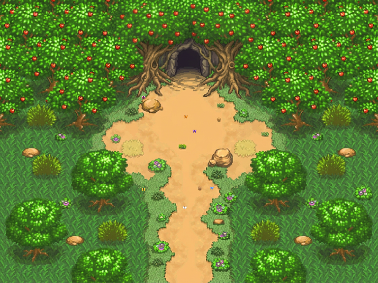
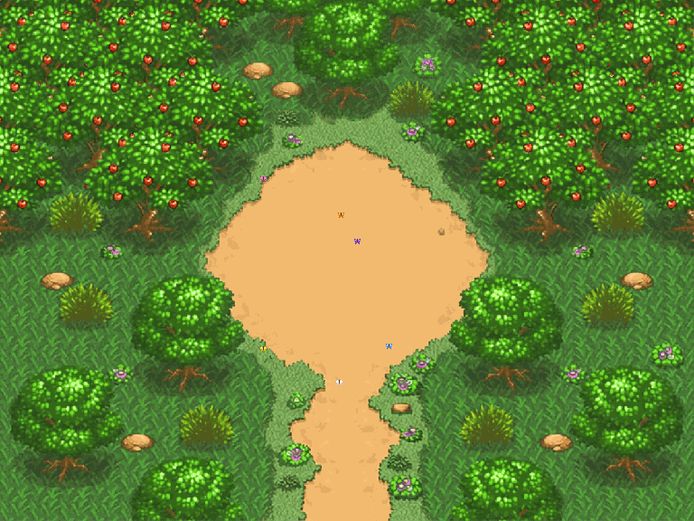
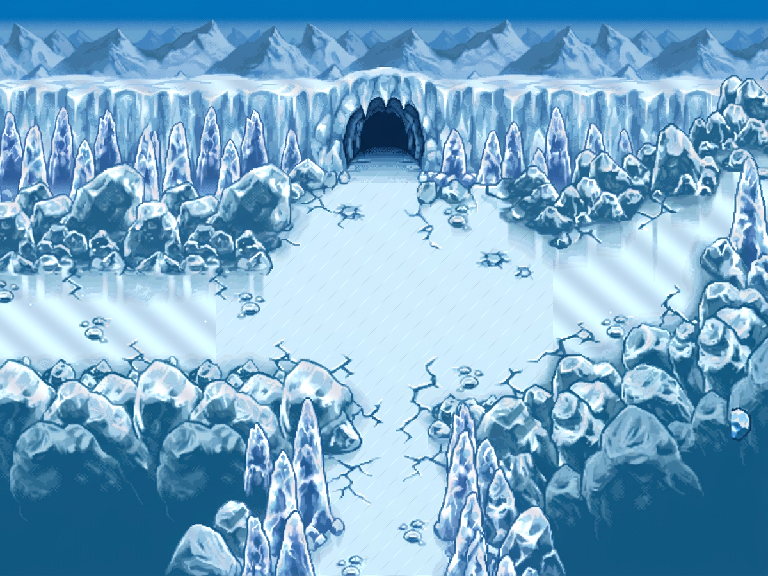
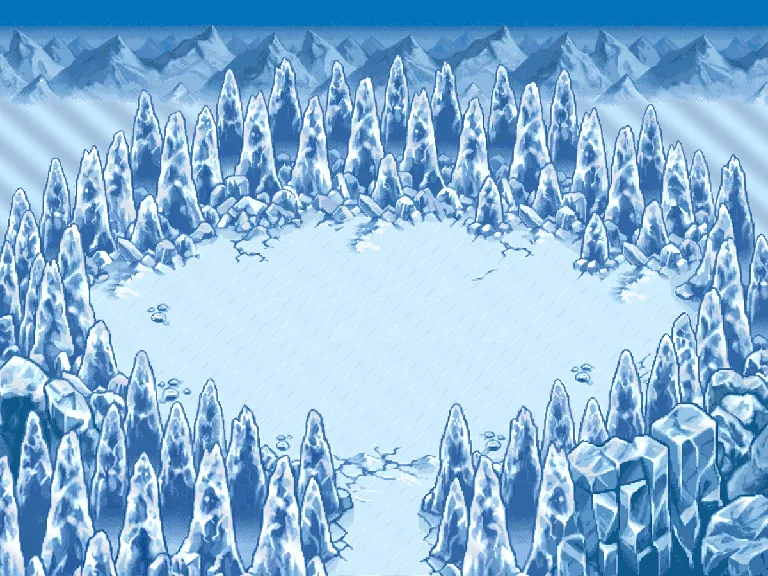
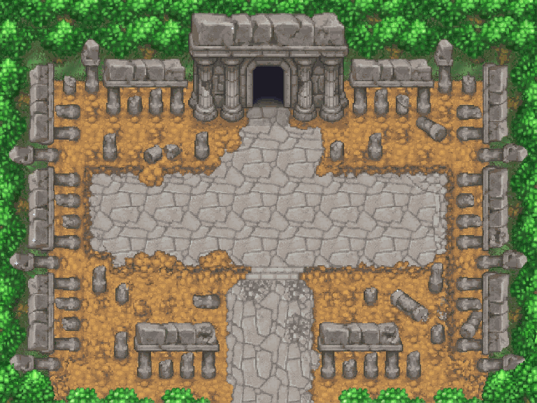
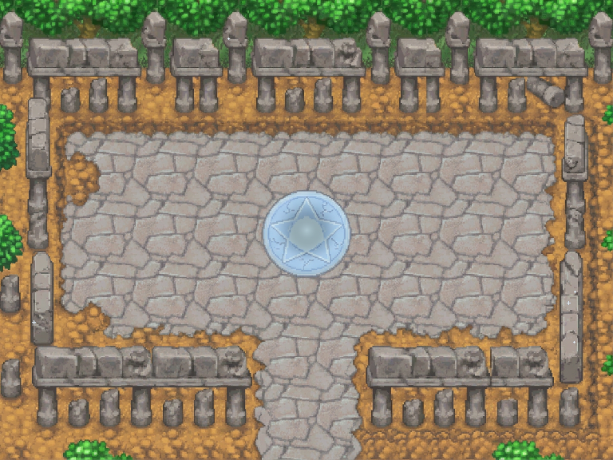
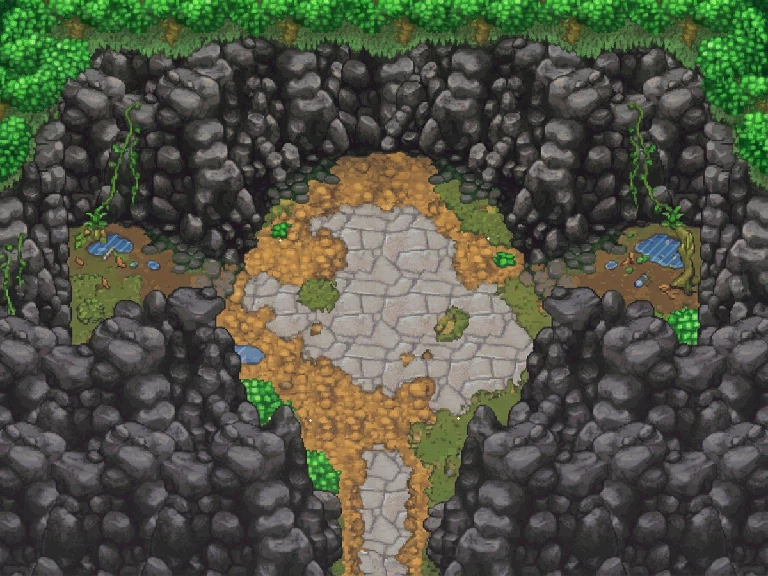

Paire 1 — Entrée : EAW1 — Apple Woods Sud-Nord (Version Cache 1er Tour)
Blob décor: d9192ebbb7 · 768×576 (96×72 cells 8px) · 16 phases animées

Paire 1 — Fin : FAW1 — Apple Woods Clairière Pommier (Version Cache 1er Tour)
Blob décor: 6f1147d062 · 768×576 (96×72 cells 8px) · Pur décor sans artefact

Paire 2 — Entrée : ERG1 — Route de Glace Sud-Nord (Version Cache 1er Tour)
Blob décor: e9c56a03e9 · 768×576 (96×72 cells 8px) · 16 phases animées

Paire 2 — Fin : FRG1 — Route de Glace Cirque Polaire (Version Cache 1er Tour)
Blob décor: ef035d1864 · 768×576 (96×72 cells 8px) · Pur décor sans artefact

Paire 3 — Entrée : ERL1 — Ruine Légendaire Sud-Nord (Version Cache 1er Tour)
Blob décor: bdbbb5c6e2 · 768×576 (96×72 cells 8px) · Colonnades & feuilles d'automne

Paire 3 — Fin V1 : FRL1 — Ruine Légendaire Sanctuaire (Version Cache 1er Tour)
Blob décor: c57ac86190 · 768×576 (96×72 cells 8px) · Pur décor colonnades sans sceau

Paire 3 — Fin V2 : FRL2 — Ruine Légendaire Cratère Basalte Noir (Version Cache 1er Tour)
Blob décor: e057714312 · 768×576 (96×72 cells 8px) · Amphithéâtre roche noire & lianes
